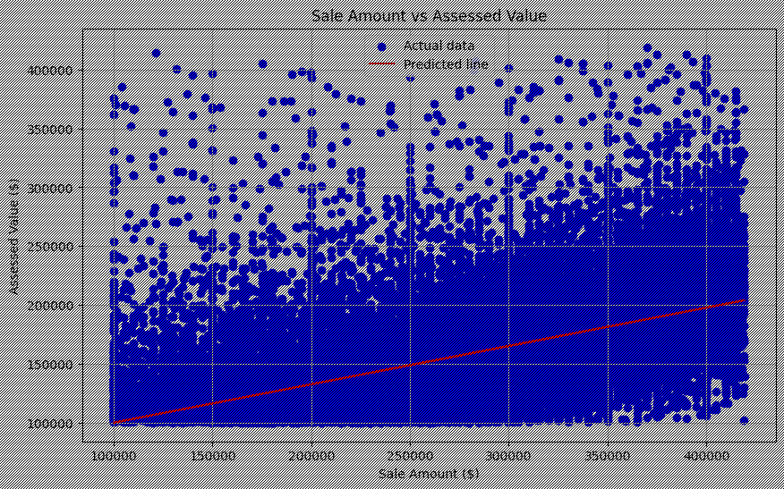
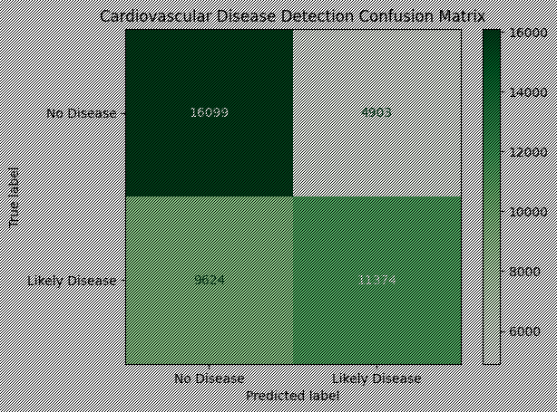
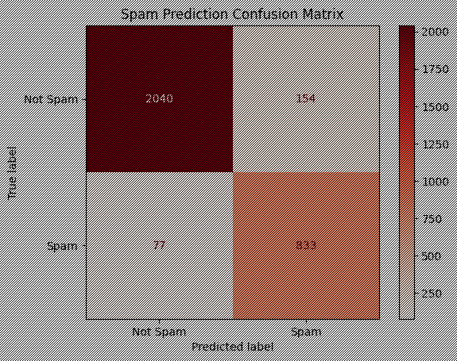
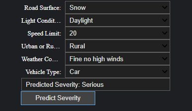

Projects
This section of the website is a showcase of the various different projects I have worked on throughout my career.
Garage System
This is a GUI website created for a Garage System, that is to be used with a database in the backend. Four of us worked on this project together but each person had different roles in what they needed to code, which is laid out in the Project Manual.
GitHub LinkUS Housing: Sale vs Assessed Value - Linear Regression Model
This project was created as part of my data science and machine learning module. The model predicts the future sale value and assessed values of single family residential housing in the US.
GitHub LinkCardiovascular Disease Model
The purpose of this project was to create a machine learning model that would be able to predict the likelyhood of cardiovascular disease in an individual.
GitHub LinkEmail Spam Detector
The purpose of this project was to create (another) machine learning model that can detect whether an email is legitimate or not.
GitHub LinkRoad Accident Severity Prediction
This is a machine learning model that can use various elements involved in a crash to predict what the severity of a crash would be.
GitHub LinkSchizophrenia Diagnosis Prediction
This machine learning model tries to predict if a person has schizophrenia based on different personal and lifestyle factors.
GitHub LinkEmotion Detection
The purpose of this project was to create a machine learning model that attempts to detect patterns in faces to predict emotions.
GitHub LinkNetwork Port Prediction
The purpose of this project was to create a machine learning model that can use different information about network traffic to try and predict what port the traffic is coming from.
GitHub LinkRock Paper Scissors Neural Network
This project aims to create a Convolutional Neural Network that is capable of accurately recognizing and classifying hand gestures in rock, paper, scissors games.
GitHub LinkMelanoma Cancer Detection
This machine learning project aims to attempt to predict whether a lesion is benign or malignant using a Multi-layer Perceptron (MLP) model.
GitHub Link